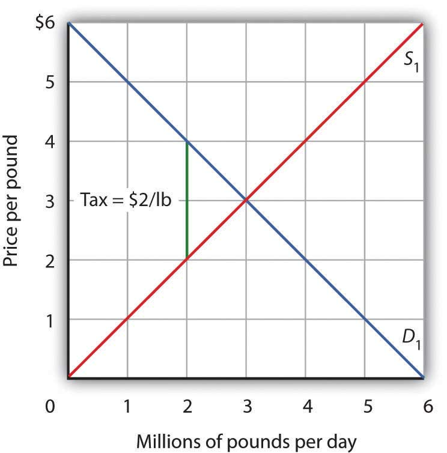
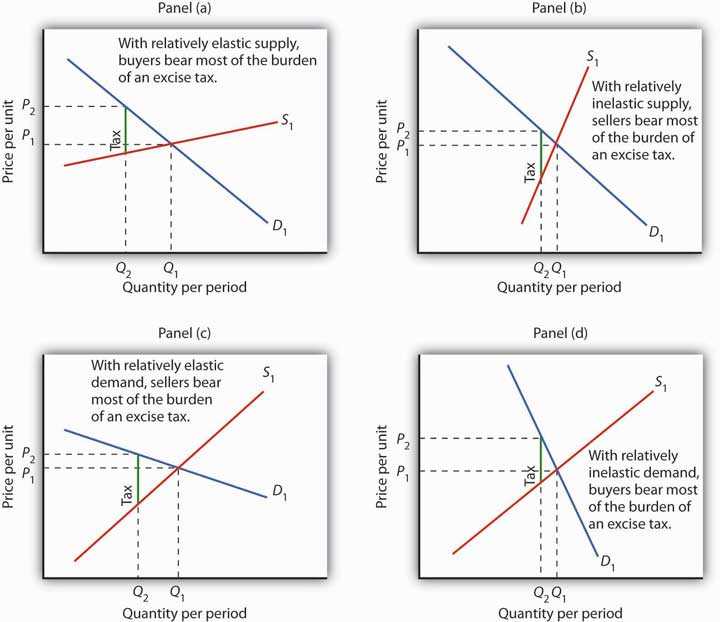

If government services are to be provided, people must pay for them. The primary source of government revenue is taxes. In this section we examine the principles of taxation, compare alternative types of taxes, and consider the question of who actually bears the burden of taxes.
In addition to imposing taxes, governments obtain revenue by charging user feesFees levied on consumers of government-provided services., which are fees levied on consumers of government-provided services. The tuition and other fees charged by public universities and colleges are user fees, as are entrance fees at national parks. Finally, government agencies might obtain revenue by selling assets or by holding bonds on which they earn interest.
Virtually anything can be taxed, but what should be taxed? Are there principles to guide us in choosing a system of taxes?
Jean-Baptiste Colbert, a minister of finance in seventeenth-century France, is generally credited with one of the most famous principles of taxation:
“The art of taxation consists in so plucking the goose as to obtain the largest possible amount of feathers with the smallest possible amount of hissing.”
Economists, who do not typically deal with geese, cite two criteria for designing a tax system. The first is based on the ability of people to pay taxes and the second focuses on the benefits they receive from particular government services.
The ability-to-pay principlePrinciple that holds that people with more income should pay more taxes. holds that people with more income should pay more taxes. As income rises, the doctrine asserts, people are able to pay more for public services; a tax system should therefore be constructed so that taxes rise too. Wealth, the total of assets less liabilities, is sometimes used as well as income as a measure of ability to pay.
The ability-to-pay doctrine lies at the heart of tax systems that link taxes paid to income received. The relationship between taxes and income may take one of three forms: taxes can be regressive, proportional, or progressive.
A regressive taxA tax that takes a higher percentage of income as income falls. is one that takes a higher percentage of income as income falls. Taxes on cigarettes, for example, are regressive. Cigarettes are an inferior good—their consumption falls as incomes rise. Thus, people with lower incomes spend more on cigarettes than do people with higher incomes. The cigarette taxes paid by low-income people represent a larger share of their income than do the cigarette taxes paid by high-income people and are thus regressive.
A proportional taxTax that takes a fixed percentage of income, no matter what the level of income. is one that takes a fixed percentage of income. Total taxes rise as income rises, but taxes are equal to the same percentage no matter what the level of income. Some people argue that the U.S. income tax system should be changed into a flat tax system, a tax that would take the same percentage of income from all taxpayers. Such a tax would be a proportional tax.
A progressive taxA tax that takes a higher percentage of income as income rises. is one that takes a higher percentage of income as income rises. The federal income tax is an example of a progressive tax. Table 15.1 "Federal Income Tax Brackets, 2011" shows federal income tax rates for various brackets of income for a married couple in 2011. As shown in the table, at higher income levels, couples faced a higher percentage tax rate. Any income over $379,150, for example, was taxed at a rate of 35%.
Table 15.1 Federal Income Tax Brackets, 2011
| 2011 adjusted gross income (married couple) | Personal income tax rate applied to bracket |
|---|---|
| Less than $17,000 | 10% |
| 17,000–$69,000 | 15% |
| $69,000–139,350 | 25% |
| $139,350–$212,300 | 28% |
| $212,300–$379,150 | 33% |
| Greater than $379,150 | 35% |
The federal income tax is progressive. The percentage tax rate rises as adjusted gross income rises.
While a pure flat tax would be proportional, most proposals for such a tax would exempt some income from taxation. Suppose, for example, that households paid a “flat” tax of 20% on all income over $40,000 per year. This tax would be progressive. A household with an income of $25,000 per year would pay no tax. One with an income of $50,000 per year would pay a tax of $2,000 (.2 times $10,000), or 4% of its income. A household with an income of $100,000 per year would pay a tax of $12,000 (.2 times $60,000) per year, or 12% of its income. A flat tax with an income exemption would thus be a progressive tax.
An alternative criterion for establishing a tax structure is the benefits-received principlePrinciple that holds that a tax should be based on the benefits received from the government services funded by the tax., which holds that a tax should be based on the benefits received from the government services funded by the tax.
Local governments rely heavily on taxes on property, in large part because the benefits of many local services, including schools, streets, and the provision of drainage for wastewater, are reflected in higher property values. Suppose, for example, that public schools in a particular area are especially good. People are willing to pay more for houses served by those schools, so property values are higher; property owners benefit from better schools. The greater their benefit, the greater the property tax they pay. The property tax can thus be viewed as a tax on benefits received from some local services.
User fees for government services apply the benefits-received principle directly. A student paying tuition, a visitor paying an entrance fee at a national park, and a motorist paying a highway toll are all paying to consume a publicly provided service; they are thus paying directly for something from which they expect to benefit. Such fees can be used only for goods for which exclusion is possible; a user fee could not be applied to a service such as national defense.
Income taxes to finance public goods may satisfy both the ability-to-pay and benefits-received principles. The demand for public goods generally rises with income. Thus, people with higher incomes benefit more from public goods. The benefits-received principle thus suggests that taxes should rise with income, just as the ability-to-pay principle does. Consider, for example, an effort financed through income taxes by the federal government to clean up the environment. People with higher incomes will pay more for the cleanup than people with lower incomes, consistent with the ability-to-pay principle. Studies by economists consistently show that people with higher incomes have a greater demand for environmental improvement than do people with lower incomes—a clean environment is a normal good. Requiring people with higher incomes to pay more for the cleanup can thus be justified on the benefits-received principle as well.
Certainly taxes cannot respond precisely to benefits received. Neither the ability-to-pay nor the benefits-received doctrine gives us a recipe for determining just what each person “should” pay in taxes, but these doctrines give us a framework for thinking about the justification for particular taxes.
Figure 15.5 Sources of Government Revenue

The chart shows sources of revenue for federal, state, and local governments in the United States. The data omit revenues from government-owned utilities and liquor stores. All figures are in billions of dollars. Data are for 2007.
Source: U.S. Bureau of the Census, Statistical Abstract of US, 2011 (online) Tables 434 and 473.
It is hard to imagine anything that has not been taxed at one time or another. Windows, closets, buttons, junk food, salt, death—all have been singled out for special taxes. In general, taxes fall into one of four primary categories. Income taxesTaxes imposed on the income earned by a person or firm. are imposed on the income earned by a person or firm; property taxesTaxes imposed on assets. are imposed on assets; sales taxesTaxes imposed on the value of goods sold. are imposed on the value of goods sold; and excise taxesTaxes imposed on specific goods or services. are imposed on specific goods or services. Figure 15.5 "Sources of Government Revenue" shows the major types of taxes financing all levels of government in the United States.
The federal personal income tax is the largest single source of tax revenue in the United States; most states and many cities tax income as well. All income tax systems apply a variety of exclusions to a taxpayer’s total income before arriving at taxable incomeThe amount of income that is actually subject to any tax., the amount of income that is actually subject to the tax. In the U.S. federal income tax system, for example, a family deducted several thousand dollars for each member of the family as part of its computation of taxable income.
Income taxes can be structured to be regressive, proportional, or progressive. Income tax systems in use today are progressive.
In analyzing the impact of a progressive tax system on taxpayer choice, economists focus on the marginal tax rateThe tax rate that would apply to an additional $1 of taxable income earned.. This is the tax rate that would apply to an additional $1 of taxable income earned. Suppose an individual was earning taxable income of $8,000 and paid federal income taxes of $800, or 10% of taxable income (ignoring exemptions that would eliminate taxes for such an individual). Suppose the next tax bracket of 15% starts at $8,001 and the taxpayer were to receive $100 more of taxable income. That $100 would be taxed at a rate of 15%. That person thus faces a marginal tax rate of 15%.
Economists argue that choices are made at the margin; it is thus the marginal tax rate that is most likely to affect decisions. Say that the individual in our example is considering taking on additional work that would increase his or her income to $15,000 per year. With a marginal tax rate of 15%, the individual would keep $5,950 of the additional $7,000 earned. It is that $5,950 that the individual will weigh against the opportunity cost in forgone leisure in deciding whether to do the extra work.
Property taxes are taxes imposed on assets. Local governments, for example, generally impose a property tax on business and personal property. A government official (typically a local assessor) determines the property’s value, and a proportional tax rate is then applied to that value.
Property ownership tends to be concentrated among higher income groups; economists generally view property taxes as progressive. That conclusion, however, rests on assumptions about who actually pays the tax, an issue examined later in this chapter.
Sales taxes are taxes imposed as a percentage of firms’ sales and are generally imposed on retail sales. Some items, such as food and medicine, are often exempted from sales taxation.
People with lower incomes generally devote a larger share of their incomes to consumption of goods covered by sales taxes than do people with higher incomes. Sales taxes are thus likely to be regressive.
An excise tax is imposed on specific items. In some cases, excise taxes are justified as a way of discouraging the consumption of demerit goods, such as cigarettes and alcoholic beverages. In other cases, an excise tax is a kind of benefits-received tax. Excise taxes on gasoline, for example, are typically earmarked for use in building and maintaining highways, so that those who pay the tax are the ones who benefit from the service provided.
The most important excise tax in the United States is the payroll tax imposed on workers’ earnings. The proceeds of this excise on payrolls finance Social Security and Medicare benefits. Most U.S. households pay more in payroll taxes than in any other taxes.
Next time you purchase an item at a store, notice the sales tax imposed by your state, county, and city. The clerk rings up the total, then adds up the tax. The store is the entity that “pays” the sales tax, in the sense that it sends the money to the government agencies that imposed it, but you are the one who actually foots the bill—or are you? Is it possible that the sales tax affects the price of the item itself?
These questions relate to tax incidence analysisA type of economic analysis that seeks to determine where the actual burden of a tax rests., a type of economic analysis that seeks to determine where the actual burden of a tax rests. Does the burden fall on consumers, workers, owners of capital, owners of natural resources, or owners of other assets in the economy? When a tax imposed on a good or service increases the price by the amount of the tax, the burden of the tax falls on consumers. If instead it lowers wages or lowers prices for some of the other factors of production used in the production of the good or service taxed, the burden of the tax falls on owners of these factors. If the tax does not change the product’s price or factor prices, the burden falls on the owner of the firm—the owner of capital. If prices adjust by a fraction of the tax, the burden is shared.
Figure 15.6 "Tax Incidence in the Model of Demand and Supply" gives an example of tax incidence analysis. Suppose D1 and S1 are the demand and supply curves for beef. The equilibrium price is $3 per pound; the equilibrium quantity is 3 million pounds of beef per day. Now suppose an excise tax of $2 per pound of beef is imposed. It does not matter whether the tax is levied on buyers or on sellers of beef; the important thing to see is that the tax drives a $2 per pound “wedge” between the price buyers pay and the price sellers receive. This tax is shown as the vertical green line in the exhibit; its height is $2.
Figure 15.6 Tax Incidence in the Model of Demand and Supply
Suppose the market price of beef is $3 per pound; the equilibrium quantity is 3 million pounds per day. Now suppose an excise tax of $2 per pound is imposed, shown by the vertical green line. We insert this tax wedge between the demand and supply curves. It raises the market price to $4 per pound, suggesting that buyers pay half the tax in the form of a higher price. Sellers receive a price of $2 per pound; they pay half the tax by receiving a lower price. The equilibrium quantity falls to 2 million pounds per day.
We insert our tax “wedge” between the demand and supply curves. In our example, the price paid by buyers rises to $4 per pound. The price received by sellers falls to $2 per pound; the other $2 goes to the government. The quantity of beef demanded and supplied falls to 2 million pounds per day. In this case, we conclude that buyers bear half the burden of the tax (the price they pay rises by $1 per pound), and sellers bear the other half (the price they receive falls by $1 per pound). In addition to the change in price, a further burden of the tax results from the reduction in consumer and in producer surplus. We have not shown this reduction in the graph.
Figure 15.7 "Tax Incidence and the Elasticity of Demand and of Supply" shows how tax incidence varies with the relative elasticities of demand and supply. All four panels show markets with the same initial price, P1, determined by the intersection of demand D1 and supply S1. We impose an excise tax, given by the vertical green line. As before, we insert this tax wedge between the demand and supply curves. We assume the amount of the tax per unit is the same in each of the four markets.
Figure 15.7 Tax Incidence and the Elasticity of Demand and of Supply
We show the effect of an excise tax, given by the vertical green line, in the same way that we did in Figure 15.6 "Tax Incidence in the Model of Demand and Supply". We see that buyers bear most of the burden of such a tax in cases of relatively elastic supply (Panel (a)) and of relatively inelastic demand (Panel (d)). Sellers bear most of the burden in cases of relatively inelastic supply (Panel (b)) and of relatively elastic demand (Panel (c)).
In Panel (a), we have a market with a relatively elastic supply curve S1. When we insert our tax wedge, the price rises to P2; the price increase is nearly as great as the amount of the tax. In Panel (b), we have the same demand curve as in Panel (a), but with a relatively inelastic supply curve S2. This time the price paid by buyers barely rises; sellers bear most of the burden of the tax. When the supply curve is relatively elastic, the bulk of the tax burden is borne by buyers. When supply is relatively inelastic, the bulk of the burden is borne by sellers.
Panels (c) and (d) of the exhibit show the same tax imposed in markets with identical supply curves S1. With a relatively elastic demand curve D1 in Panel (c) (notice that we are in the upper half, that is, the elastic portion of the curve), most of the tax burden is borne by sellers. With a relatively inelastic demand curve D1 in Panel (d) (notice that we are in the lower half, that is, the inelastic portion of the curve), most of the burden is borne by buyers. If demand is relatively elastic, then sellers bear more of the burden of the tax. If demand is relatively inelastic, then buyers bear more of the burden.
Table 15.2 "Federal Tax Burdens in the United States (All Numbers in %)" provides an estimate of the federal tax burden for different quintiles (groups containing 20% of the population) of the U.S. population and for different taxes, based on estimates of who bears the burden of a tax, not on who pays the tax. For example, studies argue that, even though businesses pay half of the payroll taxes, the burden of payroll taxes actually falls on households. The reason is that the supply curve of labor is relatively inelastic, as shown in Panel (b) of Figure 15.7 "Tax Incidence and the Elasticity of Demand and of Supply". Taking these adjustments into account, the table shows progressivity in federal taxes overall but that the payroll tax is regressive while the other types of taxes are progressive.
Table 15.2 Federal Tax Burdens in the United States (All Numbers in %)
| Cash Income Percentile | Individual Income Tax | Payroll Tax | Corporate Income Tax | Estate Tax | Effective Federal Tax Rate, 2011 |
|---|---|---|---|---|---|
| Lowest quintile | −5.7 | 6.2 | 0.4 | * | 0.8 |
| Second quintile | −2.8 | 8.1 | 0.5 | * | 5.8 |
| Middle quintile | 3.2 | 8.8 | 0.5 | * | 12.5 |
| Fourth quintile | 7.0 | 8.9 | 0.7 | * | 16.6 |
| Highest quintile | 14.0 | 5.6 | 3.2 | 0.2 | 23.1 |
| All quintiles | 9.0 | 7.0 | 2.0 | 0.1 | 18.1 |
| *Less than 0.05 | |||||
In a regressive tax system, people in the lowest quintiles face the highest tax rates. A proportional system imposes the same rates on everyone; a progressive system imposes higher rates on people in higher deciles. The table gives estimates of the burden on each quintile of federal taxes in 2011. As you can see, the tax structure in the United States is progressive.
Source: Urban-Brookings Tax Policy Center Microsimulation Model (version 0411-2), preliminary results, August 24, 2011, at http://www.taxpolicycenter.org.
Consider three goods, A, B, and C. The prices of all three goods are determined by demand and supply (that is, the three industries are perfectly competitive) and equal $100. The supply curve for good A is perfectly elastic; the supply curve for good B is a typical, upward-sloping curve; and the supply curve for good C is perfectly inelastic. Suppose the federal government imposes a tax of $20 per unit on suppliers of each good. Explain and illustrate graphically how the tax will affect the price of each good in the short run. Show whether the equilibrium quantity will rise, fall, or remain unchanged. Who bears the burden of the tax on each good in the short run? (Hint: Review the chapter on the elasticity for a discussion of perfectly elastic and perfectly inelastic supply curves; remember that the tax increases variable cost by $20 per unit.)
We speak often of the importance of tax rates at the margin—of how much of an extra dollar earned through labor or interest on saving will be kept by the decision-maker. It turns out, however, that figuring out just what that marginal tax rate is is not an easy task.
Consider the difficulty of untangling just what those marginal tax rates are. First, Americans face a bewildering complex of taxes. They all face the federal income tax. Each state—and many cities—levy additional taxes on income. Then there is the FICA payroll tax, federal and state corporate income taxes, and excise taxes, as well as federal, state, and local sales taxes. A person trying to figure out his or her marginal tax rate cannot stop there. Gaining an additional dollar of income will affect not only taxes but eligibility for various transfer payment programs in the level of payments the individual or household can expect to receive. Given the enormous complexity involved, it is safe to say that no one really knows what his or her marginal rate is.
Economists Laurence J. Kotlikoff and David Rapson of Boston University have taken on the task of sorting out marginal tax rates for the United States. They used a commercial tax analysis program, Economic Security Planner™, and added their own computer programs to incorporate the effect of additional income on various transfer payment programs. Their analysis assumed the taxpayer lived in Massachusetts, but the general tenor of their results applies to people throughout the United States.
Consider a 60-year-old couple earning $10,000 per year. That couple is eligible for a variety of welfare programs. With food stamps, there is a dollar-for-dollar reduction in aid for each additional dollar of income earned. In effect, the couple faces an effective marginal tax rate of 100%. Considering all other taxes and welfare programs, the economists concluded that the couple faced a marginal tax rate of about 50% on labor income. Overall, they found that a pattern of marginal rates for various ages and income levels could be described in a single word: “bizarre.”
The tables below give the economists’ estimates of marginal rates for current year labor supply for a single individual and for couples with children at various incomes and ages. While the overall structure of taxes in the United States is progressive, the special treatment of welfare programs can add a strong element of regressivity.
| Marginal Net Tax Rates on Current-Year Labor Supply (Couples, percentages) | |||||
|---|---|---|---|---|---|
| Total Annual Household Earnings (000s) | |||||
| Age | 10 | 20 | 30 | 50 | 75 |
| 30 | −14.2 | 42.5 | 42.3 | 24.4 | 36.9 |
| 45 | −11.4 | 41.7 | 41.8 | 35.8 | 36.1 |
| 60 | 50.9 | 32.0 | 36.3 | 36.3 | 45.5 |
| Age | 100 | 150 | 200 | 300 | 500 |
| 30 | 37.0 | 45.9 | 36.8 | 43.9 | 44.0 |
| 45 | 36.1 | 45.1 | 35.9 | 40.0 | 43.2 |
| 60 | 45.5 | 47.7 | 43.2 | 45.8 | 45.0 |
Source: Laurence J. Kotlikoff and David Rapson, “Does It Pay, At the Margin, to Work and Save?” NBER Tax Policy & the Economy, 2007, 21(1): 83–143. The tables shown here are Tables 4.2 and 4.3 in the article.
| Marginal Net Tax Rates on Current-Year Labor Supply (Individuals, percentages) | |||||
|---|---|---|---|---|---|
| Total Annual Household Earnings (000s) | |||||
| Age | 10 | 20 | 30 | 50 | 75 |
| 30 | 72.3 | 42.9 | 42.9 | 37.0 | 37.0 |
| 45 | −0.8 | 42.9 | 42.6 | 37.0 | 36.1 |
| 60 | 39.5 | 37.3 | 37.7 | 46.4 | 45.5 |
| Age | 125 | 150 | 200 | 250 | |
| 30 | 36.2 | 36.9 | 42.0 | 41.5 | |
| 45 | 36.1 | 36.5 | 42.0 | 41.5 | |
| 60 | 38.8 | 44.0 | 45.0 | 44.0 | |
Look again at our 60-year-old couple. It faces a very high marginal tax rate. A younger couple with the same income actually faces a negative marginal tax rate—increasing its labor income by a dollar actually increases its after-tax income by more than a dollar. Why the difference? The economists assumed that the younger couple would have children and thus qualify for a variety of programs, including the Earned Income Tax Credit. The couple at age 60 still faces the dollar-for-dollar reduction in payments in the Food Stamp program. No one designed these marginal incentives. They simply emerge from the bewildering mix of welfare and tax programs households face.
The tax adds a $20 wedge between the price paid by buyers and received by sellers. In Panel (a), the price rises to $120; the entire burden is borne by buyers. In Panel (c), the price remains $100; sellers receive just $80. Therefore, sellers bear the burden of the tax. In Panel (b), the price rises by less than $20, and the burden is shared by buyers and sellers. The relative elasticities of demand and supply determine whether the tax is borne primarily by buyers or sellers, or shared equally by both groups.